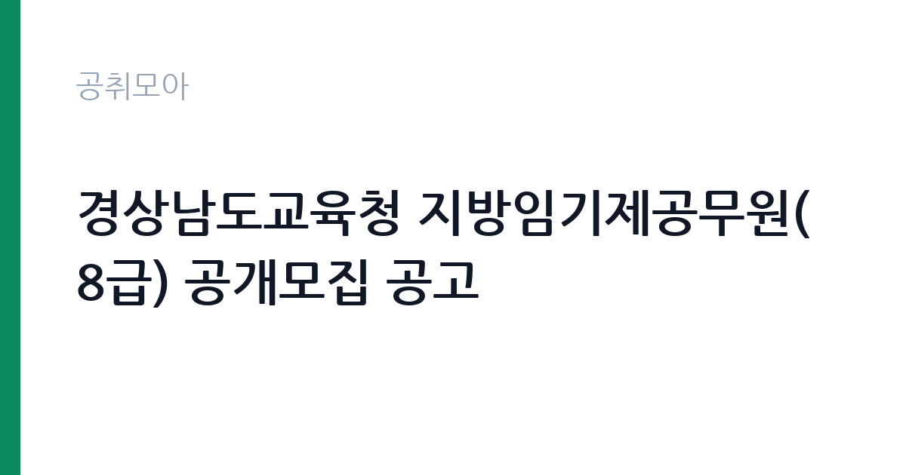

[교육청] 경상남도교육청 지방임기제공무원(8급) 공개모집 공고
경상남도교육청 · 경남 · 마감 2026-10-08 (D-16) · 출처 나라일터

한눈에 보는 모집 조건
| 기관 | 경상남도교육청 |
|---|---|
| 공고명 | 경상남도교육청 지방임기제공무원(8급) 공개모집 공고 |
| 고용형태 | 임기제 |
| 근무지 | 경남 |
| 게시일 | 2026-09-22 |
| 마감일 | 2026-10-08 (D-16) |
지원자격, 이렇게 읽으세요
- 방재안전8급 6명
- 접수 ~2026-10-08 마감
- 세부 조건은 원문 공고문 확인
모집 분야는 안전교육 전문인력(방재안전 8급)으로, 지원 자격의 세부 내용은 붙임의 공고문에서 확인하셔야 합니다. 방재와 안전교육 관련 자격증이나 실무 경력이 핵심 요건이 될 가능성이 큽니다. 지방공무원 임용이므로 결격사유 등의 조건도 함께 살펴보시기 바랍니다. 모집인원이 6명이므로 본인의 경력이 방재안전 직무와 어떻게 맞는지 정리해 두시기 바랍니다.
이 공고의 포인트
첫 번째 포인트는 6명 선발의 비교적 큰 규모라는 점입니다. 단일 분야 6명은 임기제 채용에서 흔치 않은 규모라 기회가 넓습니다. 두 번째로 학교 안전교육은 법정 의무교육과 연계된 안정적인 수요가 있는 분야입니다. 세 번째로 교육청 소속 지방공무원으로 임용되어 교육행정 현장에서 전문성을 발휘할 수 있습니다. 방재안전 분야 경력자에게 적합한 공고입니다.
전형은 어떻게 진행되나
전형은 경력경쟁 방식으로 서류전형과 면접시험을 거쳐 선발합니다. 응시원서 접수는 2026년 10월 6일부터 10월 8일까지 3일간이며, 휴일은 제외됩니다. 제출 방법은 방문 또는 우편으로, 접수처는 경상남도교육청 총무과 인사의 안전교육 전문인력 임기제 채용 담당입니다. 접수 기간이 짧으므로 미리 서류를 준비하시기 바랍니다.
원문에서 확인한 전형 방식
경상남도교육청인사위원회공고 제2026-31호 경상남도교육청 지방임기제공무원(8급) 공개모집 공고 경상남도교육청에서는 다음과 같이 지방임기제공무원을 공개모집 하오니 유능한 인재의 많은 응모를 바랍니다. 1. 모집분야 - 안전교육 전문인력(방재안전 8급) 2. 지원자격: 붙임의 공고문 참조 3. 모집인원: 6명 4. 근무(예정)처: 붙임의 공고문 참조 5. 응시원서 접수: 2026. 10. 6.(화)~10. 8.(목)(휴일 제외, 방문 또는 우편 제출) 예시) 경상남도교육청 총무과 인사담당 "안전교육 전문인력 임기제 채용 담당" 2026년 9월 22일 경상남도교육청인사위원회위원장
이런 분께 추천해요
- 방재안전과 학교 안전교육 분야 경력이 있으신 분
- 경남 지역 교육청 소속으로 근무하고 싶으신 분
- 6명 선발의 기회를 활용해 공직에 진출하고 싶으신 분
지원 전 체크리스트
- 방재안전 분야의 자격·경력 요건을 첨부 공고문에서 확인했습니다
- 응시원서 접수 기간 3일(10월 6일~8일)에 맞춰 서류를 준비했습니다
- 근무 예정처를 첨부 공고문에서 확인했습니다
- 방문·우편 접수처와 제출 방법을 확인했습니다
모집 일정과 제출 타이밍
응시원서 접수는 2026년 10월 6일부터 10월 8일까지 3일간입니다. 추석 연휴 이후이므로 연휴 기간에 서류를 완성해 두시기 바랍니다. 서류전형 합격자 발표와 면접 일정은 교육청 안내에 따르시기 바랍니다. 6명 선발이라 면접 대상 인원도 많을 수 있으니 면접 준비를 미리 시작하시기 바랍니다.
직무 이해하기: 교육청
안전교육 전문인력은 학교의 안전교육과 방재 업무를 지원합니다. 안전교육 프로그램 운영과 교직원 연수 지원, 재난 대응 매뉴얼 관리, 학교 시설 안전 점검 지원 등을 맡습니다. 경남 지역 교육지원청과 학교에서 근무하며, 교육청 카테고리 공고입니다.
자기소개서 작성 팁
응시서류에서는 방재안전과 안전교육 관련 경험과 자격을 구체적으로 기술하시기 바랍니다. 수행했던 교육 프로그램과 훈련, 성과를 수치와 함께 제시하면 좋습니다. 학교 안전에 대한 책임감과 교육 철학을 진정성 있게 서술하시기 바랍니다.
면접 준비 포인트
면접에서는 학교 재난 상황 대처와 안전교육 기획 능력을 질문받을 가능성이 큽니다. 실제 사례를 중심으로 답변을 준비하시기 바랍니다. 교육청 조직에서의 협업 경험을 묻는다면 학교와 교육지원청 사이에서 소통했던 사례를 제시하시기 바랍니다.
급여·근무조건 읽는 법
보수 수준은 원문 공고문에서 확인하셔야 합니다. 지방임기제 8급의 봉급은 지방공무원보수규정에 따른 연봉제가 적용되며, 경력을 고려해 책정됩니다. 정확한 금액과 수당 구성은 원문의 보수 조건에서 확인하시기 바랍니다. 실수령액은 세금과 공제 후 금액임을 참고하시기 바랍니다.
자주 묻는 질문
- 모집인원이 몇 명입니까
방재안전 8급 6명을 선발합니다. 근무 예정처는 첨부 공고문에서 확인하시기 바랍니다. - 접수는 어떻게 합니까
10월 6일부터 10월 8일까지 3일간 방문 또는 우편으로 제출합니다. 휴일은 제외되며, 접수처는 교육청 총무과 인사 담당입니다. - 어떤 자격이 필요합니까
안전교육 전문인력으로서 방재안전 관련 자격과 경력이 요구됩니다. 세부 지원 자격은 붙임의 공고문에서 확인하시기 바랍니다.
함께 보면 좋은 공고
[교육청] 전북특별자치도교육청 지방일반임기제공무원( 학생수련지도) 경력경쟁임용시험 시행 계획 공고 — 마감 2026-10-02[교육청] 휘문중학교 교육공무직원(미화원) 초단시간근로자 채용 공고 — 마감 2026-09-29[교육청] 인천운서중학교 특수교육대상학생 보조인력(자원봉사자) 모집 공고 — 마감 2026-09-28출처: 나라일터 공개정보를 바탕으로 공취모아가 정리한 안내글입니다. 모집 조건·일정은 변경될 수 있으니 지원 전 반드시 원문 공고문을 확인하세요. 본 글은 정보 제공용이며 합격을 보장하지 않습니다.